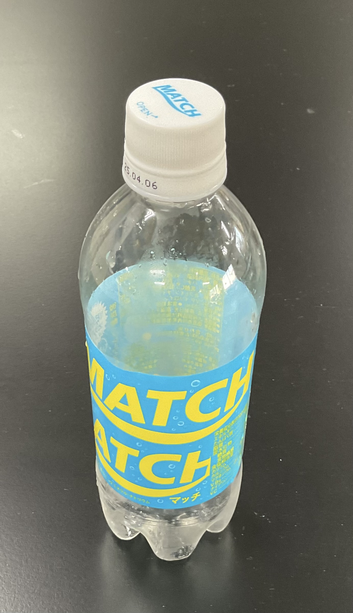
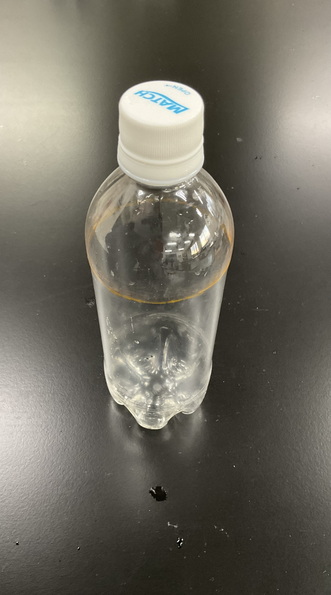

実験に必要なもの
- ピンポン玉
- 500mlのペットボトル
ペットボトルはキットのなかに入っておりませんので、ご自身で用意してください。
この説明書は安全に実験をするために絶対に必要です。
絶対に最後までお読みください。
ペットボトルはキットのなかに入っておりませんので、ご自身で用意してください。
⓪ピンポン玉がペットボトルの口を通らないことを確認してください。
①ペットボトルを下図の線で切ります。
②下図のようにボールを持ち、息を吹き込みます。
流体（主に気体か液体）から受ける力の一つです。
空気は速く流れているところほど圧力が低くなります。
一定面積にかかっている力の大きさです。
これではわからないと思うので詳しく解説します。
シャーペンを用意します。
消しゴムのほうで指を軽く押します。
痛くないですよね？
ではシャー芯が出ているほうではどうでしょうか？
手をケガしないようにお気をつけください。
痛いですよね。これが圧力の違いです。
もう少し解説します。
ストローで飲み物を吸うときには口の中は圧力が低くなっています。
ストローで飲み物を吸うと口の中まで上がってきますよね？
つまり、物体は一般的に圧力が高いところから低いところに動こうとします。
ピンポン玉の上面は空気の流れが速く、下面は空気の流れが遅いです。
そのため、上面の圧力が低くなり、下面の圧力が高くなります。
なのでピンポン玉は上に押し上げられます。
揚力を通して、科学のふしぎを楽しんでいただくことができていたら幸いです。
質問等ございましたら、公式Lineか5aoristos@reabiz.jpまで。
星光のことや趣味のことなどでも気軽にご質問ください。